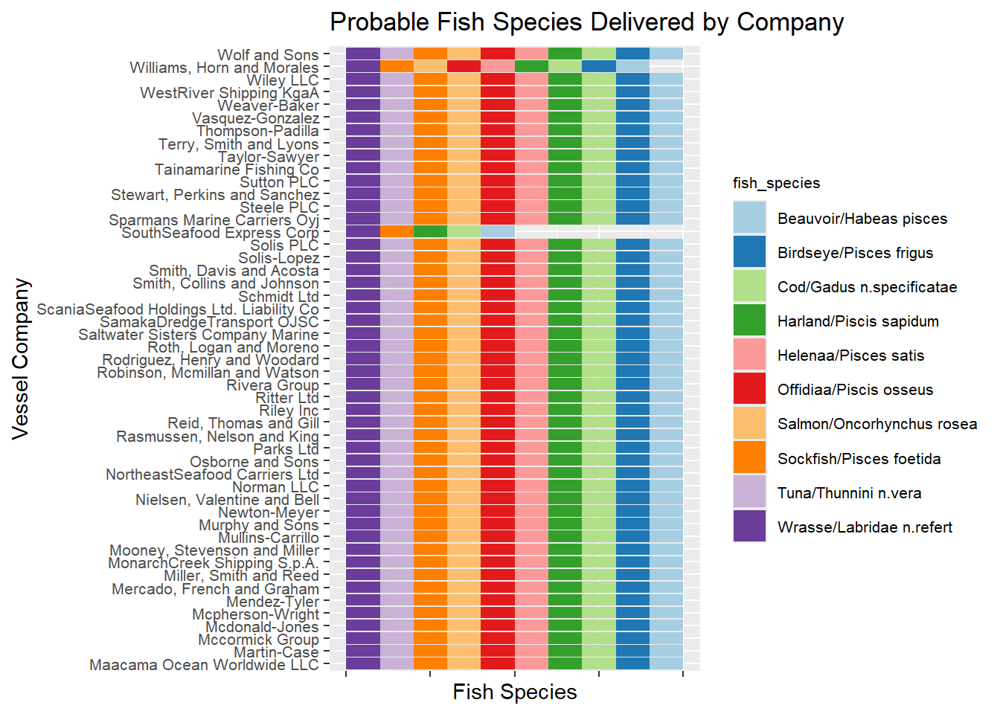

Code
pacman::p_load(jsonlite,tidyverse,igraph,ggraph) source: Dribble.com
source: Dribble.com
Vast Challenge also known as IEEE Visual Analytics Science and Technology (VAST) Challenge is Visual Analytics competition which aims to promote innovation in the field of data transformation and interactive visualization. Vast Challenge 2024 is based on the theme of detecting bias, illegal fishing behavior and temporal patterns in fishing industry in Oceanus, an island nation.
This exercise will be based on Mini-Challenge 2:MC2 of Vast Challenge 2024. The objective of the exercise is to help FishEye, a non-profit organization to detect and prevent illegal fishing behaviour, by performing geographic and temporal visual analysis. This exercise will aim to answer the following questions from MC2 of Vast Challenge through visual analytics:
Question 1:
 Develop visualizations that illustrate the inappropriate behavior of SouthSeafood Express Corp vessels. FishEye analysts have long wanted to better understand the flow of commercially caught fish through Oceanus’s many ports. But as they were loading data into CatchNet, they discovered they had purchased the wrong port records. They wanted to get the ship off-load records, but they instead got the port-exit records (essentially trucks/trains leaving the port area). Port exit records do not include which vessel that delivered the products. Given this limitation, develop a visualization system to associate vessels with their probable cargos. Which vessels deliver which products and when? What are the seasonal trends and anomalies in the port exit records?.
Develop visualizations that illustrate the inappropriate behavior of SouthSeafood Express Corp vessels. FishEye analysts have long wanted to better understand the flow of commercially caught fish through Oceanus’s many ports. But as they were loading data into CatchNet, they discovered they had purchased the wrong port records. They wanted to get the ship off-load records, but they instead got the port-exit records (essentially trucks/trains leaving the port area). Port exit records do not include which vessel that delivered the products. Given this limitation, develop a visualization system to associate vessels with their probable cargos. Which vessels deliver which products and when? What are the seasonal trends and anomalies in the port exit records?.
Question 2:
 Develop visualizations that illustrate the inappropriate behavior of SouthSeafood Express Corp vessels. How do their movement and catch contents compare to other fishing vessels? When and where did SouthSeafood Express Corp vessels perform their illegal fishing? How many different types of suspicious behaviors are observed? Use visual evidence to justify your conclusions.
Develop visualizations that illustrate the inappropriate behavior of SouthSeafood Express Corp vessels. How do their movement and catch contents compare to other fishing vessels? When and where did SouthSeafood Express Corp vessels perform their illegal fishing? How many different types of suspicious behaviors are observed? Use visual evidence to justify your conclusions.
The code chunk below uses p_load() function from pacman package to check if packages listed are already installed in the computer. The packages are loaded if they are found to be installed. If they are not installed, the function will proceed to install and load them into R environment.
pacman::p_load(jsonlite,tidyverse,igraph,ggraph)Below code import MC2 data using fromJSON command from jsonlite package.
mc2_data <- fromJSON("data/MC2/mc2.json")Below code process and clean Edges data.
# Load edges data to mc2_edges
mc2_edges <- as_tibble(mc2_data$links) %>%
distinct()
# Correcting date data type using lubridate package
mc2_edges$time <- as_datetime(mc2_edges$time)
mc2_edges$"_last_edited_date" <- as_datetime(mc2_edges$"_last_edited_date")
mc2_edges$"_date_added" <- as_datetime(mc2_edges$"_date_added")
mc2_edges$date <- as.POSIXct(mc2_edges$date, format = "%Y-%m-%d")
# Updating field names
mc2_edges <- mc2_edges %>%
rename("last_edited_by" = "_last_edited_by",
"date_added" = "_date_added",
"last_edited_date" = "_last_edited_date",
"raw_source" = "_raw_source",
"algorithm" = "_algorithm")
# Divide different events into different table
E_TransponderPing <- subset(mc2_edges, mc2_edges$type == "Event.TransportEvent.TransponderPing")
E_HarborRpt <- subset(mc2_edges, mc2_edges$type == "Event.HarborReport")
E_Tx <- subset(mc2_edges, mc2_edges$type == "Event.Transaction")Take a look at mc2_edges to ensure data is processed correctly.
glimpse(mc2_edges)Rows: 271,643
Columns: 17
$ type <chr> "Event.TransportEvent.TransponderPing", "Event.Tra…
$ time <dttm> 2035-09-16 04:06:48, 2035-09-20 05:21:33, 2035-09…
$ dwell <dbl> 115074.79, 412706.32, 286092.88, 327623.95, 243225…
$ last_edited_by <chr> "Olokun Daramola", "Melinda Manning", "Olokun Dara…
$ date_added <dttm> 2035-09-16 00:59:46, 2035-09-22 02:37:37, 2035-09…
$ last_edited_date <dttm> 2035-09-16 00:59:46, 2035-09-22 02:37:37, 2035-10…
$ raw_source <chr> "Oceanus Vessel Locator System", "Oceanus Vessel L…
$ algorithm <chr> "OVLS-Catch&Hook", "OVLS-Catch&Hook", "OVLS-Catch&…
$ source <chr> "City of Haacklee", "City of Haacklee", "City of H…
$ target <chr> "perchplundererbc0", "perchplundererbc0", "perchpl…
$ key <int> 0, 1, 2, 3, 4, 5, 6, 7, 8, 0, 1, 2, 3, 4, 5, 6, 7,…
$ date <dttm> NA, NA, NA, NA, NA, NA, NA, NA, NA, NA, NA, NA, N…
$ data_author <chr> NA, NA, NA, NA, NA, NA, NA, NA, NA, NA, NA, NA, NA…
$ aphorism <chr> NA, NA, NA, NA, NA, NA, NA, NA, NA, NA, NA, NA, NA…
$ holiday_greeting <chr> NA, NA, NA, NA, NA, NA, NA, NA, NA, NA, NA, NA, NA…
$ wisdom <chr> NA, NA, NA, NA, NA, NA, NA, NA, NA, NA, NA, NA, NA…
$ `saying of the sea` <chr> NA, NA, NA, NA, NA, NA, NA, NA, NA, NA, NA, NA, NA…Below code process and clean Nodes data.
# Load nodes data to mc2_nodes
mc2_nodes <- as_tibble(mc2_data$nodes) %>%
distinct()
# Correcting date data type using lubridate package
mc2_nodes$"_last_edited_date" <- as_datetime(mc2_nodes$"_last_edited_date")
mc2_nodes$"_date_added" <- as_datetime(mc2_nodes$"_date_added")
mc2_nodes$date <- as.POSIXct(mc2_nodes$date, format = "%Y-%m-%d")
# Updating field names
mc2_nodes <- mc2_nodes %>%
rename("last_edited_by" = "_last_edited_by",
"date_added" = "_date_added",
"last_edited_date" = "_last_edited_date",
"raw_source" = "_raw_source",
"algorithm" = "_algorithm")
# Divide different nodes into different table
N_fish <- subset(mc2_nodes, mc2_nodes$type == "Entity.Commodity.Fish") %>%
select_if(~ !any(is.na(.))) %>%
select(-c(`type`, `raw_source`, `algorithm`, `Activities`, `fish_species_present`)) %>%
rename(fish_species = name,
fish_id = id)
NL_City <- subset(mc2_nodes, mc2_nodes$type == "Entity.Location.City") %>%
select_if(~ !any(is.na(.))) %>%
select(-c(`raw_source`, `algorithm`, `type`, `fish_species_present`)) %>%
rename(city_name = Name,
city_id = id)
NL_Point <- subset(mc2_nodes, mc2_nodes$type == "Entity.Location.Point") %>%
select_if(~ !any(is.na(.))) %>%
select(-c(`raw_source`, `algorithm`, `kind`, `fish_species_present`)) %>%
rename(point_name = Name,
point_id = id)
# Need to tidy NL Region
NL_Region <- subset(mc2_nodes, mc2_nodes$type == "Entity.Location.Region") %>%
select_if(~ !any(is.na(.))) %>%
select(-c(`raw_source`, `algorithm`, `type`, `Description`)) %>%
rename(region_name = Name,
region_id = id,
region_kind = kind)
N_Delivery_doc <- subset(mc2_nodes, mc2_nodes$type == "Entity.Document.DeliveryReport") %>%
select_if(~ !any(is.na(.))) %>%
rename(deliver_date = date,
cargo_id = id) %>%
select(-c(`algorithm`, `type`, `raw_source`, `Activities`, `fish_species_present`))
N_vessel <- mc2_nodes %>%
filter(grepl("Entity.Vessel", type)) %>%
mutate(vessel_type = case_when(
grepl("FishingVessel", type, ignore.case = TRUE) ~ "Fishing",
grepl("Ferry.Passenger", type, ignore.case = TRUE) ~ "Ferry_Passenger",
grepl("Ferry.Cargo", type, ignore.case = TRUE) ~ "Ferry_Cargo",
grepl("Research", type, ignore.case = TRUE) ~ "Research",
grepl("Other", type, ignore.case = TRUE) ~ "Other",
grepl("Tour", type, ignore.case = TRUE) ~ "Tour",
grepl("CargoVessel", type, ignore.case = TRUE) ~ "Cargo_Vessel"
)) %>%
select(-c(`algorithm`, `type`, `raw_source`, `Activities`, `fish_species_present`)) %>%
mutate(company = ifelse(is.na(company), "Unknown", company)) %>% # Handle NA values by replacing NA with unknown
rename(vessel_id = id,
vessel_name = Name,
vessel_company = company) %>%
select_if(~ !any(is.na(.)))Take a look at mc2_nodes to ensure data is processed correctly.
glimpse(mc2_nodes)Rows: 5,637
Columns: 20
$ type <chr> "Entity.Commodity.Fish", "Entity.Commodity.Fish",…
$ last_edited_by <chr> "Clepper Jessen", "Clepper Jessen", "Haenyeo Hyun…
$ date_added <dttm> 2033-09-04, 2034-01-21, 2033-06-22, 2033-11-24, …
$ last_edited_date <dttm> 2035-01-25, 2035-01-04, 2035-01-14, 2035-01-14, …
$ raw_source <chr> "", "", "", "", "", "", "", "", "", "", "Oceanus:…
$ algorithm <chr> "", "", "", "", "", "", "", "", "", "", "", "", "…
$ name <chr> "Cod/Gadus n.specificatae", "Birdseye/Pisces frig…
$ id <chr> "gadusnspecificatae4ba", "piscesfrigus900", "pisc…
$ Name <chr> NA, NA, NA, NA, NA, NA, NA, NA, NA, NA, "Haacklee…
$ Description <chr> NA, NA, NA, NA, NA, NA, NA, NA, NA, NA, NA, NA, N…
$ Activities <list> <NULL>, <NULL>, <NULL>, <NULL>, <NULL>, <NULL>, …
$ kind <chr> NA, NA, NA, NA, NA, NA, NA, NA, NA, NA, "city", "…
$ qty_tons <dbl> NA, NA, NA, NA, NA, NA, NA, NA, NA, NA, NA, NA, N…
$ date <dttm> NA, NA, NA, NA, NA, NA, NA, NA, NA, NA, NA, NA, …
$ flag_country <chr> NA, NA, NA, NA, NA, NA, NA, NA, NA, NA, NA, NA, N…
$ company <chr> NA, NA, NA, NA, NA, NA, NA, NA, NA, NA, NA, NA, N…
$ tonnage <int> NA, NA, NA, NA, NA, NA, NA, NA, NA, NA, NA, NA, N…
$ length_overall <int> NA, NA, NA, NA, NA, NA, NA, NA, NA, NA, NA, NA, N…
$ style <chr> NA, NA, NA, NA, NA, NA, NA, NA, NA, NA, NA, NA, N…
$ fish_species_present <list> <NULL>, <NULL>, <NULL>, <NULL>, <NULL>, <NULL>, …# Rename target column as vessel_id
E_TransponderPing <- E_TransponderPing %>%
rename(vessel_id = target)
# Join data tables to include vessel_type, vessel_company in transponder ping data and filter only Fishing vessel type
E_Tping_Fishing <- E_TransponderPing %>%
left_join(N_vessel %>% select(vessel_id, vessel_type, vessel_company), by = "vessel_id") %>%
filter(vessel_type == "Fishing")First, we need to associate Cargo in delivery doc to fish species info using Transaction and Fish Nodes data.
# Extract Cargo to Fish data from Transaction Event data
Cargo_to_Fish <- E_Tx %>%
filter(target %in% N_fish$fish_id) %>% select(source, target)
# Match Cargo Id in delivery doc to fish Id from Transaction data
N_Delivery_doc <- N_Delivery_doc %>%
left_join(Cargo_to_Fish, by = c("cargo_id" = "source"))
# Match Fish Id in delivery doc to fish species from Fish Nodes
N_Delivery_doc <- N_Delivery_doc %>%
left_join(N_fish %>% select("fish_id", "fish_species"), by = c("target" = "fish_id"))
# Rename Target Column in N_Delivery_doc to Fish Id
N_Delivery_doc <- N_Delivery_doc %>%
rename(fish_id = target)Next, extract date only from time column of transponder data.
# Extract Date only from time column of Transponder Ping data
E_Tping_Fishing <- E_Tping_Fishing %>%
mutate(date_only = as.Date(time))Connect possible cargo to vessels using date as connection.
# Merge the datasets based on the date
Tping_to_Delivery <- E_Tping_Fishing %>%
filter(source %in% NL_City$city_id) %>%
left_join(N_Delivery_doc %>% select("deliver_date","cargo_id", "qty_tons", "fish_id", "fish_species"), by = c("date_only" = "deliver_date"))Visualize which company possibly deliver which fish species.
# Remove duplicate rows based on vessel_company and fish_species
distinct_species <- Tping_to_Delivery %>%
distinct(vessel_company, fish_species) %>% na.omit() %>% select(vessel_company, fish_species)
# Creating stacked bar chart
ggplot(distinct_species, aes(x = vessel_company, fill = fish_species)) +
geom_bar(position = "stack") +
labs(title = "Probable Fish Species Delivered by Company",
x = "Vessel Company",
y = "Count of Fish Species") +
theme(axis.text.x = element_text(angle = 90, hjust = 1, size = 6),
axis.text.y = element_text(size = 8),
legend.text = element_text(size = 8),
legend.title = element_text(size = 8)) +
scale_fill_discrete(name = "Fish Species")
Transponder ping data can provide the locations the vessels from shipping company has been to and give insight whether vessels have visited non-fishing areas. In this section, we will focus only on fishing vessels to understand fishing activities.
Plot a network graph showing all the shipping vessel movements by different companies
edges <- data.frame(
from = E_Tping_Fishing$vessel_company,
to = E_Tping_Fishing$source
)
# Create a graph object
graph <- graph_from_data_frame(edges, directed = FALSE)
# Plot the network
plot(graph, vertex.size=10, vertex.label.cex=0.8, vertex.label.color="black",
main="Network Visualization of Vessel Movement")
Zoom into SouthSeafood Express Corp’s vessel movement to uncover any suspicious behavior.
# Filter SouthSeafood Express Corp Vessels Only
E_Tping_Fishing_SS <- E_Tping_Fishing %>%
filter(vessel_company == "SouthSeafood Express Corp")
edges_ss <- data.frame(
from = E_Tping_Fishing_SS$vessel_company,
to = E_Tping_Fishing_SS$source
)
# Creating graph object
graph_ss <- graph_from_data_frame(edges_ss, directed = FALSE)
# Distinguish between boats, SouthSeafood, and other companies
V(graph_ss)$type <- ifelse(V(graph_ss)$name == "SouthSeafood Express Corp", "southseafood",
ifelse(V(graph)$name %in% E_Tping_Fishing_SS$vessel_id, "boat", "location"))
# Plot the network with ggraph
ggraph(graph_ss, layout = 'fr') +
geom_edge_link(aes(width = 1), edge_colour = "grey") +
geom_node_point(aes(color = type), size = 5) +
geom_node_text(aes(label = name), repel = TRUE, size = 3, color = "black") +
scale_color_manual(values = c("boat" = "orange", "location" = "blue", "southseafood" = "red")) +
theme_void() +
labs(title = "Network Visualization of SouthSeafood Express Corp Vessel Movement")